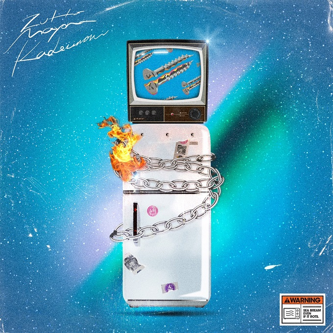
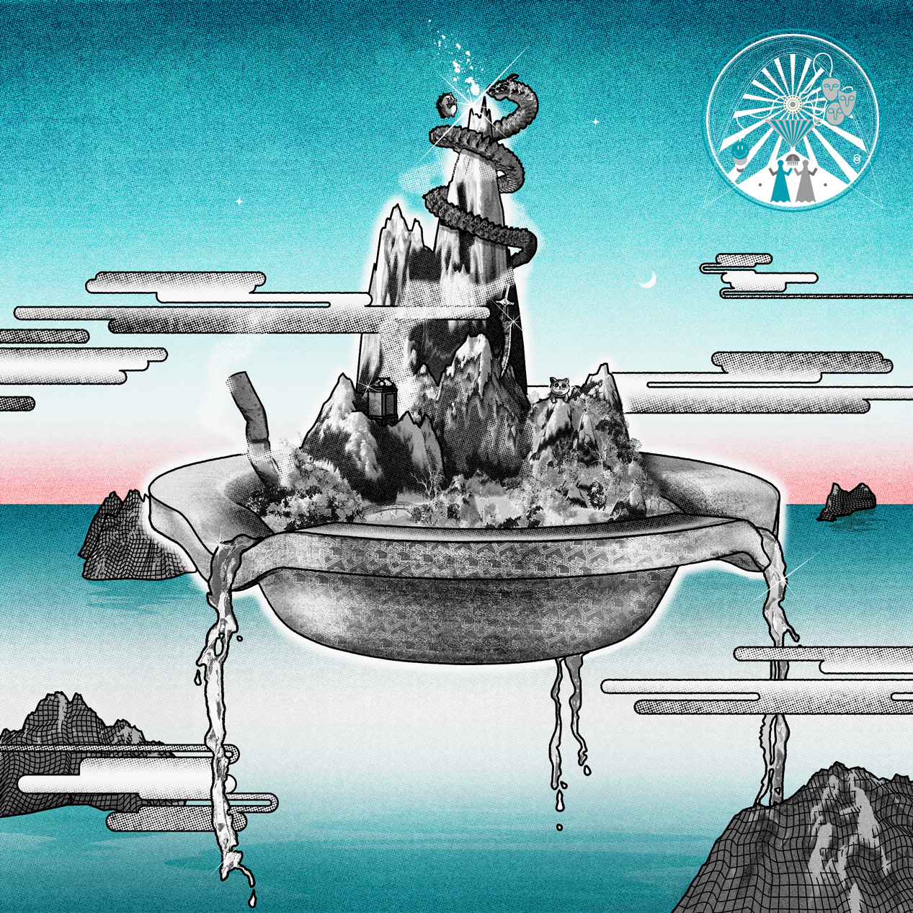

プロフィール
作詞作曲ボーカル ACAね による、不要な 電化製品の始末にお困りの方必見のバンド。 メンバーは特定の形をもたず、 特殊な楽器編成をしがち。 今宵もしゃもじでフロアを沸かす。 これまでのことはウィキペディア参照するのが分かりやすい。
おすすめアルバム

2nd FULL ALBUM ぐされ
2021

3rd FULL ALBUM 『沈香学』
2023
おすすめ曲
▶ お勉強しといてよ
4:13
▶ 残機
3:49
▶ 嘘じゃない
4:05
私が好きな理由
独特な世界観や言葉選びが魅力で、何度聴いても新しい発見があります。ACAねさんの力強く透明感のある歌声と、曲に込められたメッセージに惹かれています。